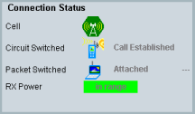

Connection Status
The connection status area displays the current connection states and information for troubleshooting.
For related hotkeys, refer to "Signaling and Connection Control".

Connection status area of the main view
Indicates the overall state of the cell (green = on, gray = off, additional = pending).
For the packet switched domain the presence of temporary block flow (TBF) is indicated:
- = no TBF
- = UL TBF present
- = DL TBF present
Displays the corresponding connection states, see also "Connection States".
Indicates the quality of the received uplink power:
- - - -: no signal from MS detected; the MS is switched off or in idle mode.
- In range: the MS power is in the expected range, according to the expected power during location update ("PMax") or during the connection (transmit power instructions (PCL, gamma) signaled to the MS). Accurate measurements can be performed in this state.
- Overdriven: the MS power is above the expected range. Either an inappropriate external attenuation is set, or the MS does not transmit at the correct power.
- Underdriven: the MS power is below the expected range. Either an inappropriate external attenuation is set, the connecting cable is defective, or the MS does not transmit at the correct power.